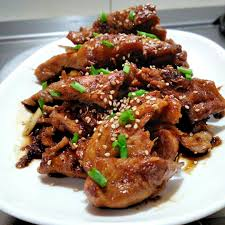

CHICKEN TERIYAKI

Description
This Teriyaki Chicken recipe will quickly become a new favorite! In this one pan recipe, bite size chicken breasts pieces are sautéed in a skillet then coated with an easy and deliciously flavorful sauce.
Ingredients
- 1/4 cup low-sodium soy sauce
- 1/4 cup water
- 2 Tbsp honey
- 1 1/2 Tbsp packed light brown sugar
- 1 Tbsp rice vinegar
- 1/4 tsp toasted sesame oil
- 2 tsp peeled and minced fresh ginger
- 2 tsp peeled and minced fresh garlic (2 cloves)
- 2 tsp cornstarch
- Sesame seeds and chopped green onions, for serving (optional)
Instructions
- Heat olive oil in a 12-inch non-stick skillet over medium-high heat.
- Add in chicken and let brown on bottom about 3 - 4 minutes then flip and continue to cook until center registers about 160 degrees, about 3 minutes longer.
- While chicken is cooking, in a small mixing bowl (or liquid measuring cup) whisk together soy sauce, water, honey, brown sugar, rice vinegar, sesame oil, ginger, garlic and cornstarch.
- Stir the sauce in with the cooked chicken and continue to cook and toss until sauce has thickened, about 30 - 60 seconds longer.
- Serve warm garnished with green onions and sesame seeds if desired.